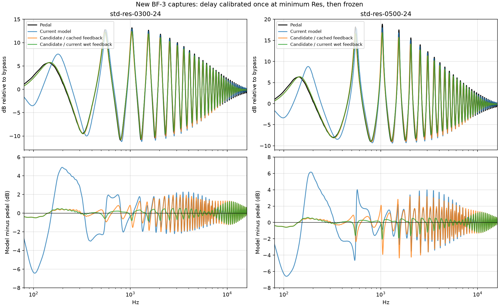

30 October 2026 · Standard mode, 48 kHz · New physical captures after model selection
Assessment: the candidate's improvement survives the intended test: estimate delay once from the first minimum-Res take, then freeze it while changing Res. At Res 3:00 and maximum, spectral RMS falls from 1.213/1.516 dB to 0.400/0.469 dB. The comparison favors the three-biquad filter with current-wet feedback over the same filter with the existing cached-feedback schedule. This supports a 48 kHz implementation/listening prototype. More BF-3 captures are not the immediate priority.
This extends the phase-model follow-up and mathematical specification and the nine-pedal audit. No production DSP was modified, and no candidate filter, gain, Res value or compensation constant was fitted to these new captures.
The six-take plan uses identical 10-second logarithmic sweeps from 20 Hz to 20 kHz, −24 dB relative to the rig reference, with two-second tails. Standard mode; Manual noon; Depth and Rate minimum. The protocol leaves these three controls and interface gains untouched and changes only Res and bypass. The Scarlett was verified in Pro Audio at 48 kHz/128 frames, direct PCM 3/4 routing, Input 2 INST/pad on and Air off. The inherited playback reference is −4.67 dBFS; this was not a new absolute level calibration.
Observed: all six active recordings have matching played-float32 SHA-256 hashes and zero reported xruns. No sample reaches |x|≥.999. The loudest sweep body, maximum Res, peaks at −18.50 dBFS on the pedal channel. The old measured pedal ceiling was around −11 dBFS in this rig, so this sweep has useful headroom against that previous observation; neither the digital peak test nor that comparison proves absence of subtle nonlinearity. Final half-second pedal noise is approximately −83.6 dBFS RMS at minimum Res and −80.8 dBFS at maximum.
| Repeat check | Observed difference | Interpretation |
|---|---|---|
| Bypass after / before, 100 Hz–10 kHz | 0.00085 dB RMS unsmoothed; 0.00026 dB with evaluation smoothing | No material gain/shape drift in the two bracketing references |
| Minimum-Res after / before, 100 Hz–10 kHz | 0.00280 dB RMS unsmoothed; 0.00229 dB smoothed | The repeated engaged setting is far more consistent than either model's error |
| Loopback relative to first bypass, 100 Hz–16 kHz | Median gain changes under 0.00023 dB; spectral shape RMS about 0.00091 dB | The interface transfer agrees closely across the recordings |
| Separated dry arrival, 300 Hz–5 kHz | Relative phase-slope timing within about 0.0021 samples of the first engaged take | No material common pedal-transport shift in this diagnostic |
The stored integer round-trip latencies vary from 449 to 583 samples; each is removed using its own loopback marker. After alignment, the loopback phase-slope differences are below 0.000005 sample. Those tiny numbers characterize these deterministic recordings and this estimator; they are not general timing accuracy or population confidence bounds. A full mid-take dropout/clock-drift certification was not performed.
The first attempt at take 3 had Res at 9:00 rather than 3:00, as reported by the user. Its original WAV, played WAV and sidecar were archived unchanged under discarded/std-res-0300-24-actual-res-0900, alongside an explicit correction record. The replacement at 3:00 is the primary test. It was recorded after the final bypass, so it is not temporally bracketed by the two bypass checks. Its loopback and separated dry arrival nevertheless agree with the earlier recordings. The archived 9:00 take is used only as a separately labeled supplementary check, with r=.146 from the existing map.
The primary metric is the previous study's RMS dB-magnitude residual over 100 Hz–10 kHz: power-smoothed from f/1.01 to 1.01f and averaged over uniform FFT bins. The impulse extraction preserves 50 ms of negative times in a 0.5-second response. Each model estimates its own effective delay from the first minimum-Res take only, within the previously declared ±4% range around 2.005 ms. This parameter is then frozen. All gains, tone filters, compensation and feedback coefficients remain exactly those selected before the new recordings.
| Setting / role | Current model | Candidate filter + cached feedback | Candidate filter + current-wet feedback |
|---|---|---|---|
| First minimum Res: timing calibration | 1.183 dB | 0.400 dB | 0.400 dB |
| Res 3:00: held out | 1.213 dB | 0.953 dB | 0.400 dB |
| Res maximum: held out | 1.516 dB | 1.282 dB | 0.469 dB |
| Minimum Res repeat: held out | 1.183 dB | 0.400 dB | 0.400 dB |
| Actual Res 9:00: supplementary archived take | 1.362 dB | 0.499 dB | 0.385 dB |
The current model's calibration delay is 1.986011 ms; the HP2 candidate's is 1.959810 ms. These are effective parameters under different filter-phase conventions. Their difference is not a measured change in the physical pedal's delay. Neither value should replace the nominal Manual table based on this one control setting.
Post-hoc check, excluded from the primary scores: allowing the preferred candidate to re-estimate delay on Res 3:00 improves RMS only from .4001 to .3955 dB; maximum Res improves from .4686 to .4672 dB. The corresponding changes are −0.0235 and −0.0135 sample. Thus per-take retiming is no longer responsible for the observed advantage. This does not establish predictive accuracy at every Manual position: the new experiment holds Manual at one position and calibrates that position once.

D(z) = z^(−N) [(1−μ) + μz^(−1)], d = N+μ Z(z) = W(z)D(z) Cached wet feedback: H(z) = gd + gw Z(z) / [1 − r z^(−1)Z(z)] Current wet feedback: H(z) = gd + gw Z(z) / [1 − r Z(z)]
The new captures favor the second equation with the previously selected HP2 wet filter. Both candidate variants have identical filter and gains, and identical delay calibration at r=0; their higher-Res difference therefore tests the loop timing within this model family. This supports that behavioral architecture, not recovery of the pedal's original circuitry or uniquely identified physical loop latency.
| Residual / held-out setting | Current | Preferred candidate |
|---|---|---|
| 80–200 Hz RMS, Res 3:00 | 4.225 dB | 0.379 dB |
| 80–200 Hz RMS, maximum Res | 4.932 dB | 0.465 dB |
| 10–16 kHz RMS, Res 3:00 | 0.291 dB | 0.668 dB |
| 10–16 kHz RMS, maximum Res | 0.306 dB | 0.675 dB |
The treble tradeoff persists. At maximum Res, the candidate's 100 Hz–10 kHz residual has 95th-percentile absolute error .993 dB and maximum absolute error 2.053 dB after smoothing; the small RMS does not mean every resonance is exact. The model remains substantially above the measured repeat difference. Audibility is not determined by any of these scalar scores.
The simpler HP1 candidate scores .396/.429 dB at the two primary held-out Res settings, slightly better in aggregate than HP2. However, its 80–200 Hz errors are 1.482/1.704 dB versus HP2's .379/.465 dB. Retain HP2 as the preferred listening prototype because its bass advantage is substantial across old and new captures; do not choose filter order from the single aggregate score alone. No further filter or Res fitting was performed on the new test set.
A secondary check convolves each actual played sweep with the predicted response, including the measured before-bypass transfer and a fixed .553514 ms common transport estimated from the first engaged take's separated dry impulse (window −1 to +1.5 ms; phase slope 300 Hz–5 kHz). The predicted and recorded outputs receive the same ideal 100 Hz–10 kHz band limit. Parseval's identity gives normalized waveform RMS error, including tails. There is no output-gain fit or timing adjustment on the evaluated takes.
| Setting | Current waveform NRMSE | Preferred candidate NRMSE |
|---|---|---|
| Res 3:00 | 38.48% | 9.65% |
| Maximum Res | 54.42% | 16.73% |
| Minimum Res repeat | 25.83% | 7.58% |
These percentages include phase and amplitude mismatch, have a different weighting from the dB-frequency score, and are not percentages of perceived similarity. The waveform calculation uses a double-precision frequency-domain realization with a finite impulse window, not a compiled C++ render. Its remaining error can reflect filter phase, resonance height, the approximate common transport and other unmodeled behavior. These quiet static sweeps do not independently validate moving-comb behavior or nonlinear distortion at guitar level.
Recommendation: proceed to a 48 kHz Standard prototype using the exact three-biquad coefficients, −0.24726 dB wet-filter correction inside every loop pass, .0529851 ms delay compensation, existing Res map and current-wet feedback schedule specified in the previous report. No new parameter values are needed from this experiment. In the current DelayLine API, reading before pushing requires interpolate(d−1) to realize d samples relative to the current input; the minimum delay exceeds one sample, so there is no algebraic loop.
The implementation agent should first match the numerical reference at fixed delays, then compare the existing modulation clicks/bursts and guitar material, concentrating on bass improvement, treble balance, fast sweeps and maximum Res. Keep the candidate selectable for a controlled comparison. The prior sample-rate warning remains: stable coefficients redesigned at other rates are not necessarily equivalent in the treble. This evidence supports the 48 kHz prototype, not an unvalidated multi-rate production replacement.
No additional BF-3 hardware session is needed before that comparison. If listening exposes a clear problem, target that behavior. The next separate research captures would be CS-3 jump-size/carrier generalization and NS-2 near-threshold history, as described in the collection audit; those are not prerequisites for assessing this BF-3 candidate.
OPENBLAS_NUM_THREADS=1 MPLCONFIGDIR=/tmp/namx-mpl \ python tools/research/analyze_bf3_locked.py \ captures/boss/bf-3/2026-10-30-standard-locked
Analysis script · complete results, hashes and diagnostics · figure · unchanged pre-capture candidate coefficients. WAVs are stored in the repository's capture directory and remain outside Git. The metadata, run log and correction record document the retake. Capture sidecars report the active main checkout's commit; rig.capture_tools_source_commit records the actual unchanged capture-tool source copied from pedals/all.